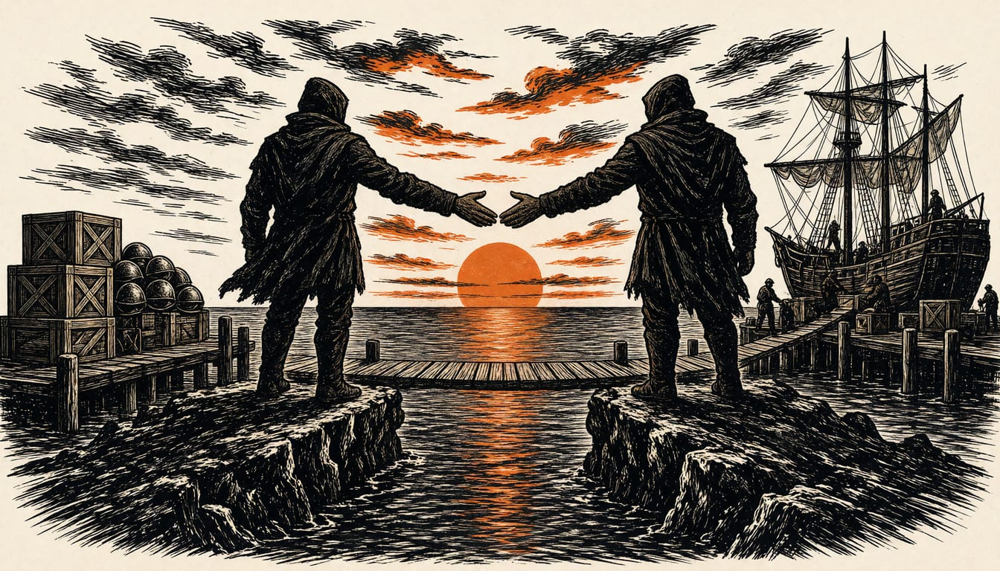

EU and Canada launch Alliance for the Future, covering security
Canada becomes the first non-European country in the EU's Safe defence procurement scheme, with contracts already won by Canadian firms in Poland and Latvia.

Canada is the first non-European participant in Safe, the EU defence procurement scheme. Canadian firms have won contracts to supply radios to Poland and helmets to Latvia.
Canada comes to this deal carrying tariffs. In August the Trump administration put 50% tariffs on some Canadian goods after the two sides failed to agree a trade deal. Canada answered with matching tariffs of its own in September. The EU is open to replicating the same model with other close and trusted partners, a spokesperson told The Brussels Times. The spokesperson named secure supply chains, research and economic security among the aims. An EU official says countries have already shown interest.
Canada and the EU give the deal different names. Mark Carney told reporters in Montreal: "Today we move toward associate membership for Canada and we launch a new alliance for the future." The Conversation, a news site, reported the EU offered an ever-closer association instead of the associate membership Ursula von der Leyen had promised Canada.
Carney has proposed a Defence, Security and Resilience Bank. It would pool funds and lend allies money for defence purchases. The joint statement only "takes note" of the plan, so the EU has not signed up to it. Philipp Lausberg, a senior policy analyst at the European Policy Centre, calls the deal a possible blueprint. He means deeper ties with like-minded nations, including Japan, South Korea and Australia.
It will be developed in close coordination with the member states and the European Parliament, before the next EU-Canada summit in June 2027. Philipp Lausberg of the European Policy Centre sees a narrow window to lock in progress. He wants a concrete roadmap of the partnership ready by that summit, and ideally before France's presidential election in April and May.